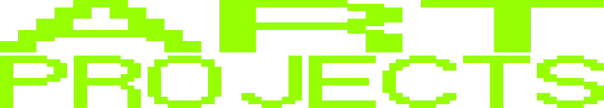
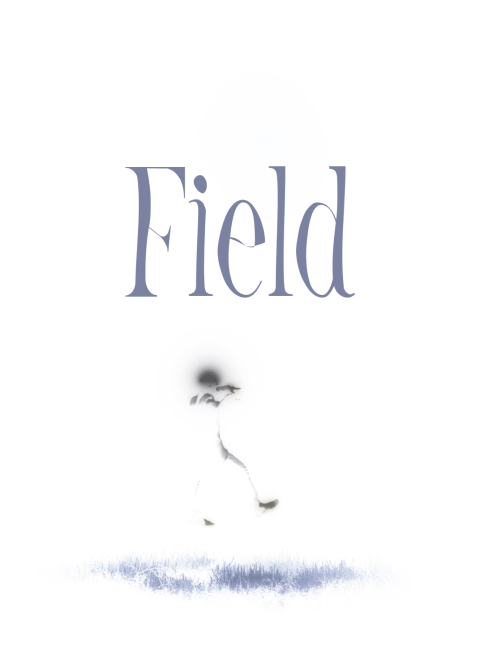
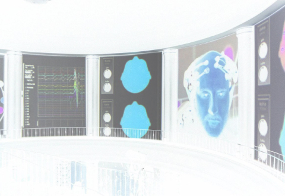
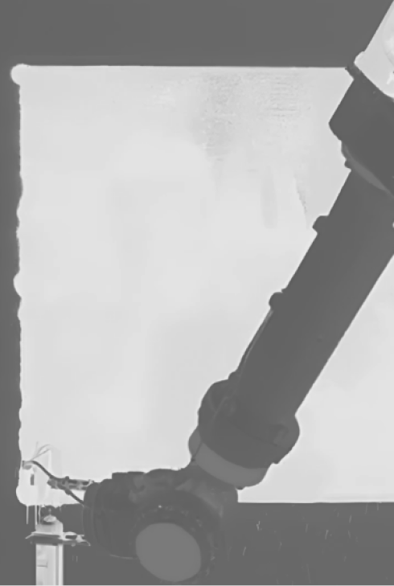
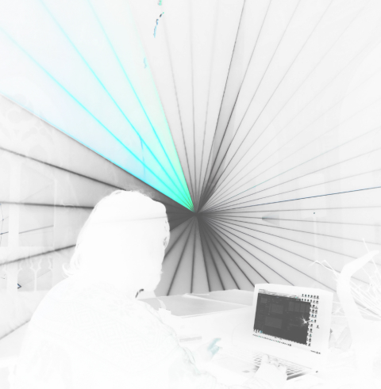
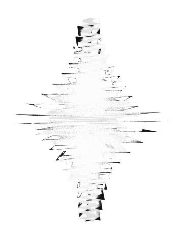
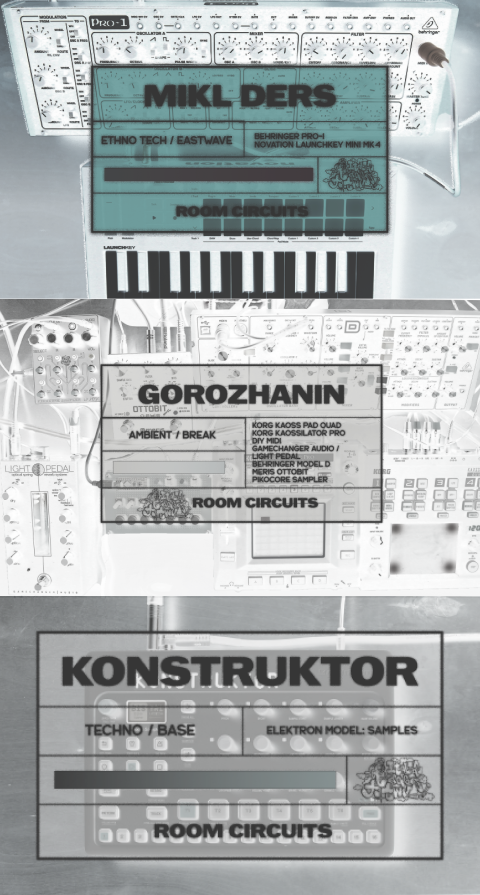
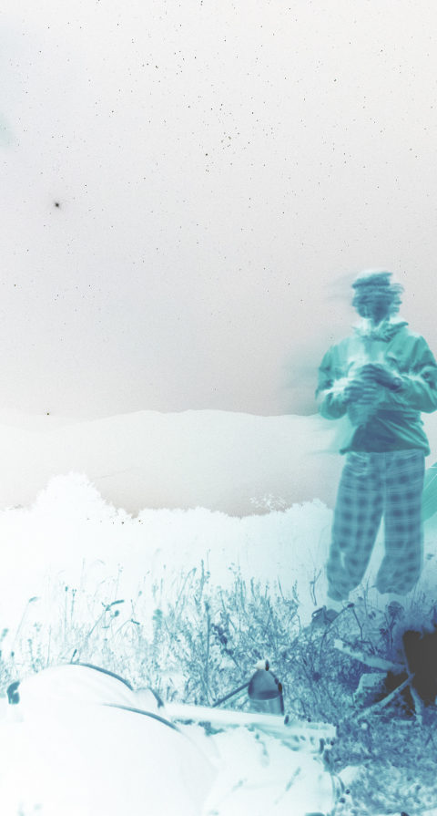
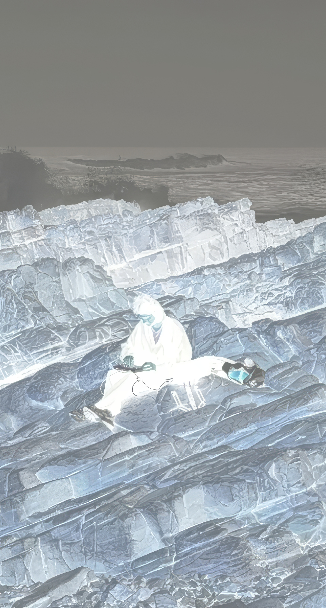
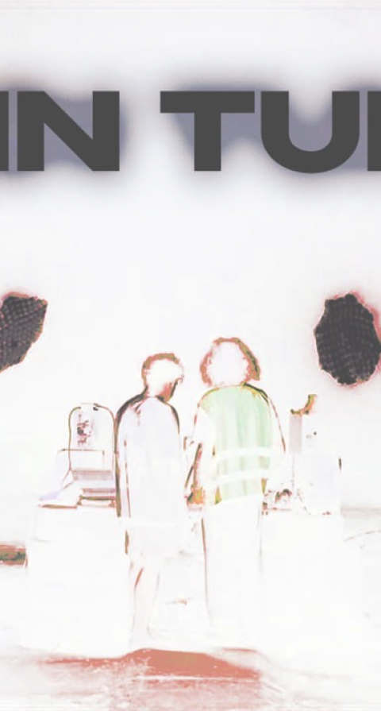

Dissolve
Volumetric Audio-Visual Performance. Captured on a 8-channel spatial sound system with surround speakers using immersive headphone listening.

Field
An individual VR experience with hints of isolation and epilepsy. Relive the kidnapping of a man in a field. Burning, stealing, floating.

The Laboratory of Pain
Theatrical and scientific experiment/performance based on it. Explores actor and three characters: a theater, a river and a table. The action of the performance was shown on the New Stage of Alexandrinsky Theatre and the Yaroslavov Theatre.

Seance
Scenic experiment based on the play "The Seance" by Armin Greder. The experiment used robots as actors and part of a creative team as well.

New absolute
Creating motion media in connection with Figma and future design. The prototype of the real process was written on a touchdesigner.

Wing
A performance represents of the industrial facade who is complemented by the sensor of artist. The story and our characters what doing are helping and doing.

Blood. Glass
The theatrical and metaphorical performance based on it. The story of the act of the performance requirements the scene for all the three. When turns into a reflective actor, we can follow of scene to death, which can so directly intervene.

Robot Kosty
Scenic experiment based on the play "The Seance" by Armin Greder. The experiment used robots as actors and part of a creative team as well.

Room circuits

SE Georgia

SE Morocco

JTR Tunnel